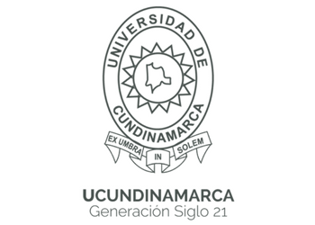

<html lang="es"></html>
<head>
  <meta name="Duvan Rubiano, Danilo Galvis" content="width=device-width, initial-scale=1.0"> 

  <meta content="text/html; charset=utf-8" http-equiv="content-type">
  <meta name="author" content="Duvan Rubiano,Danilo Galvis">
  <meta name="description" content="Pagina WEB de mi Glosario personal, correspondiente a campus de ingenieria mecatronica, UDEC ">
  <meta name="keywords" content="Glosario, Sistemas Operativos, Microprocesadores, Ingeniería Mecatronica, Sistemas, UCundinamarca">
  <title>Glosario inenieria mecatronica</title>

  <link rel="stylesheet" href="css/estilos.css">
</head>

<body>

<header> 
          
      <h1>MI GLOSARIO PERSONAL INGENIERIA MECATRONICA</h1>
      <h2>Por:  Duvan Rubiano, Danilo Galvis</h2> 
      <br><hr><br>
</header>


     <nav> 
     <p> Aquí definimos estructura del menú principal enmarcado en el bloque</p>
     </nav> 
    
</header>
<nav> 
 <ul> 
 <li><a href="index.html">Inicio</a></li> 
 <li><a href="GLOSARIO_FUNDAMENTOS_DE_INGENIERIA.html">Glosario Ingeniería</a></li> 
 <li><a href="TEORIA_DE_SISTEMAS.html">Glosario Sistemas</a></li> 
 <li><a href="Glosario_algoritmos.html">Glosario algoritmos</a></li> 
 </ul>
</nav>
<main>
     
     <hr>
</main>
<footer>
   <div class="footer-text">
	<p>&copy; UNIDEC  | Todos los derechos reservados | 2024 </p>
   </div>

</footer>


</body>
</html>